20 ciekawostek o Minecraft
Chyba wszyscy słyszeli o Minecrafcie, który od czasu premiery w 2009 stał się fenomenem kulturowym i miejscem, w którym kreatywni gracze realizują najdziwniejsze pomysły. Przedstawiam 20 ciekawostek oraz informacji związanych z grą Minecraft. Mam nadzieję, że przynajmniej kilka okaże się dla was zaskoczeniem.
1. W 2009 roku szwedzki programista i projektant Markus Persson „Notch” postanowił stworzyć grę typu sandbox – taką, która pozwoli na darmowe eksplorowanie wirtualnego świata. Pierwsza wersja gry powstała w zaledwie 6 dni.
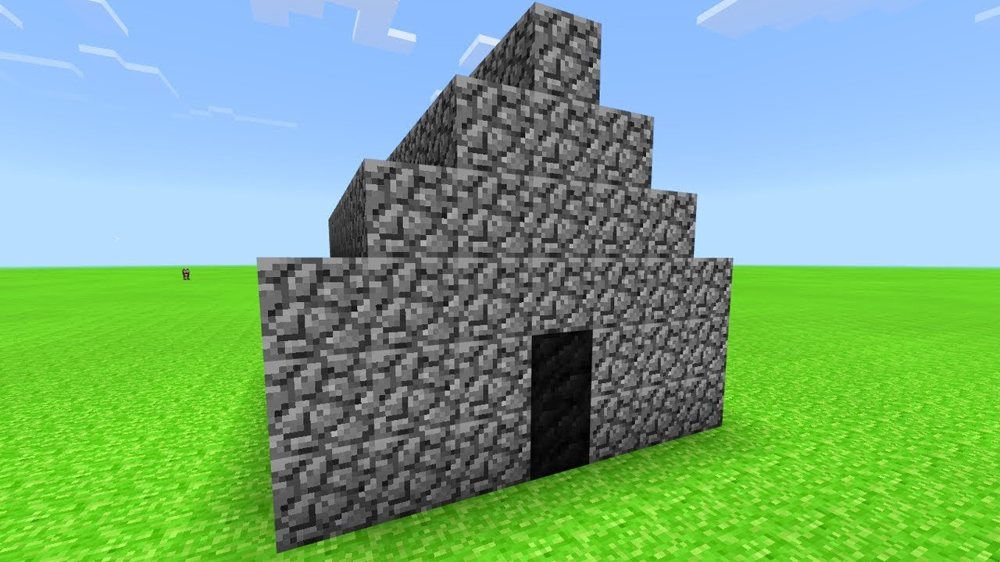
2. Po wydaniu gry Minecraft na PC, Mojang okresowo aktualizował i ulepszał grę do momentu dostarczenia pełnej wersji 18 listopada 2011 roku.
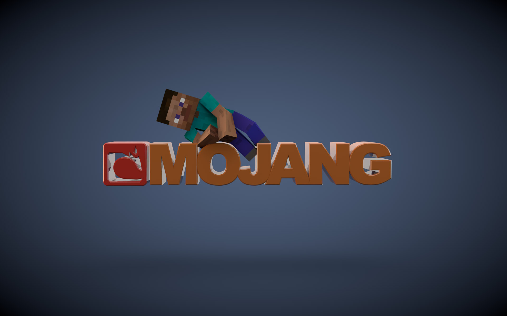
3. To najczęściej grana gra na Xbox Live. Minecraft jest popularniejszy niż Halo czy Call of Duty.
4. Kiedy Persson rozpoczął proces tworzenia gry, określił ją mianem „Cave Game”. Nazwa została wkrótce zmieniona na Minecraft: Order of the Stone, a ostatecznie tylko Minecraft.
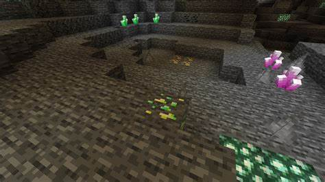
Reklama
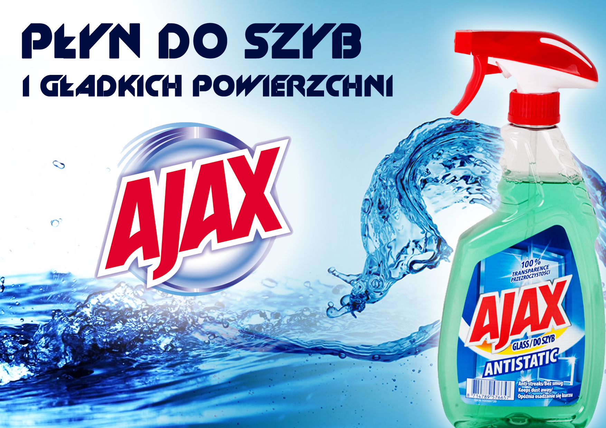
5. Dania została całkowicie odtworzona w Minecraft przez Simona Kokkendorfa i Thorbjørna Nielsena. Wyszukiwali nawet publiczne dane o drogach i budynkach, aby wszystko było w porządku. Każdy może odwiedzić wirtualną Danię w Minecraft.
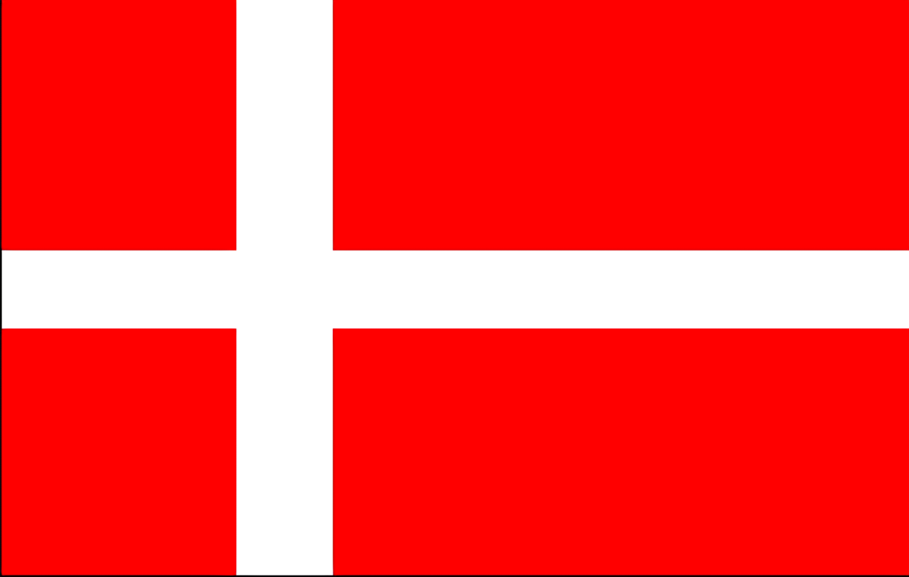
6. Twórca Minecraft wymienia gry wideo na PC: Dwarf Fortress, Dungeon Keeper, RollerCoaster Tycoon i Infiniminer jako główne inspiracje dla Minecrafta. Persson wyraził szczególne uznanie dla Infiniminer, twierdząc, że chciałby połączyć jego estetyczny urok z grą w stylu RPG. Zobaczcie w Google jak wygląda Infiniminer. Jest bardzo podobny do Minecrafta.
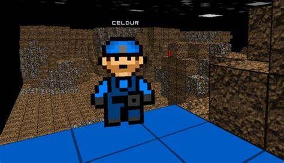
7. Jednym z gatunków Minecraft jest creeper, elektrycznie naładowany drapieżnik. Persson nie zamierzał zaprojektować takiego potwora; próbował stworzyć świnię, ale przypadkowo przełączył liczby na wysokość i długość podczas wprowadzania kodu. W rezultacie powstała potworność, którą znają i kochają gracze.
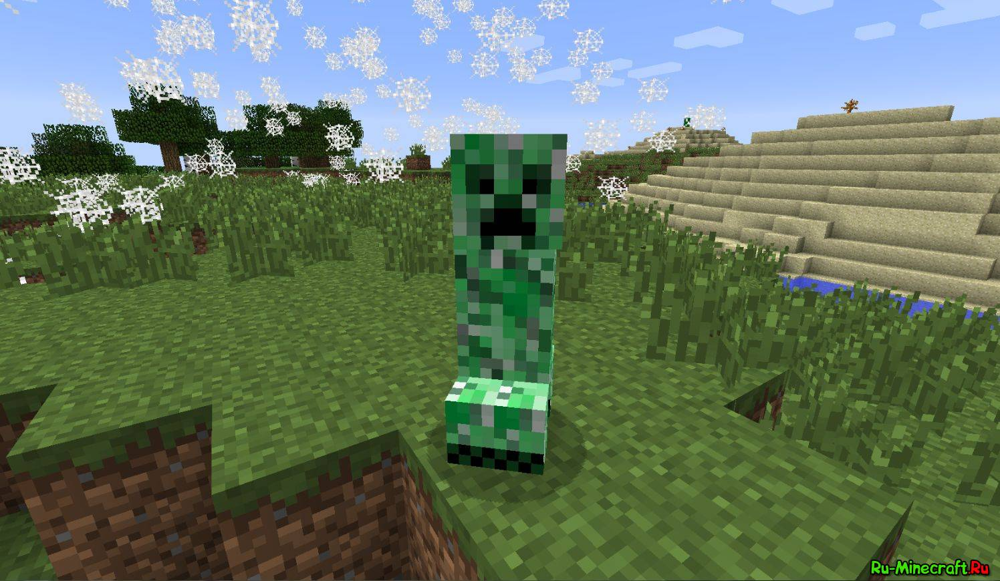
8. Jeśli dostaniesz wełnę strzygąc owcę, nożyce nie ulegną uszkodzeniu. Uszkodzenia doznają tylko wtedy, gdy uderzają w wysoką trawę lub liście.
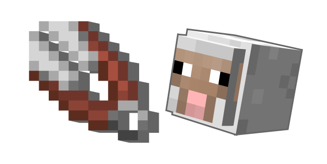
9. Podobno zmęczony polityką korporacyjną, Persson wysłał w czerwcu 2014 roku tweeta, mając nadzieję, że zainteresuje kogoś nabyciem jego akcji Mojang. Trzy miesiące później oficjalnie sprzedał firmę Microsoftowi za 2,5 mld dolarów.
Reklama
10. Łatwiej jest łowić ryby w deszczu.
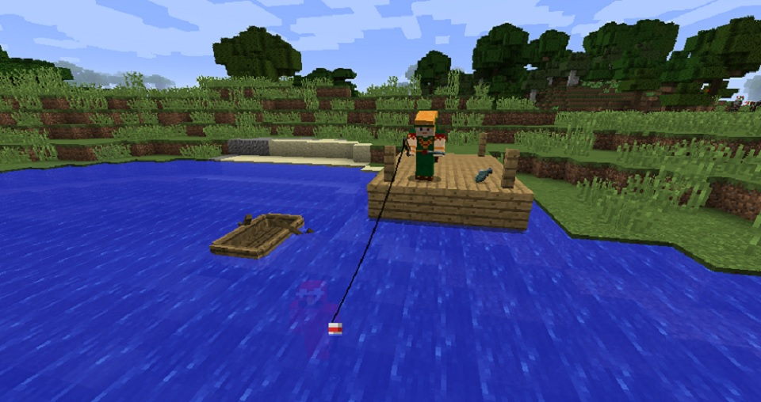
11. Raz na każde 10000 razy gdy grasz w grę, jej menu w ekranie startowym będzie wyświetlać błąd w pisowni własnego tytułu, odwracając „E” i „C”, tworząc słowo „Minceraft”.
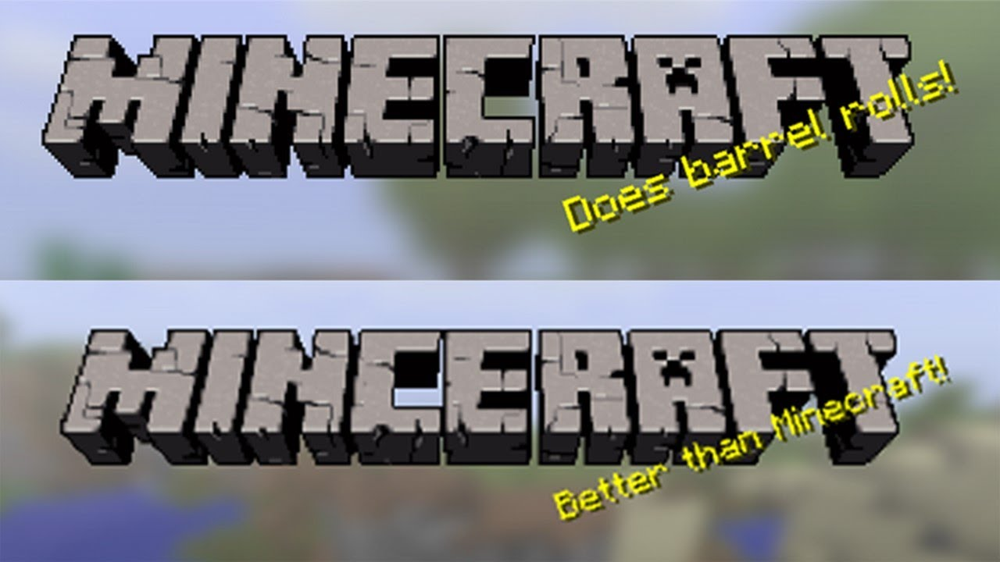
12. Jajko ma 1/256 szans na wyklucie 4 kurczaków jednocześnie.
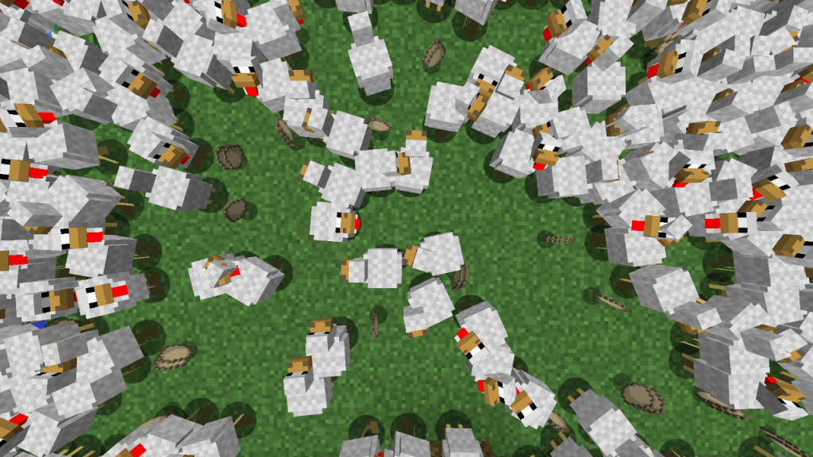
13. Technicznie rzecz biorąc, światy Minecraft nie są nieskończone. Im dalej pójdziesz w nie, tym gorzej działają.
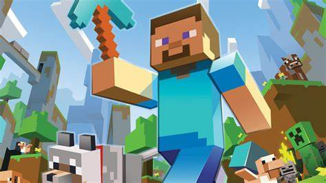
14. Mimo że pierwsza iteracja została wydana w 2009 roku, gra nadal sprzedaje się w oszałamiającym tempie, a ostatnim kamieniem milowym jest 122 miliony kopii na wszystkich platformach. Liczba cały czas rośnie.
15. Znasz te dziwne małe wiadomości, które zaczynają migać na ekranie tytułowym, jak tylko załadujesz Minecraft? Nazywa się je „splash text”, a ich zakres sięga od popkulturowych gagów do niemalże niezbadanych odniesień do gier. Gra posiada 350 takich wiadomości
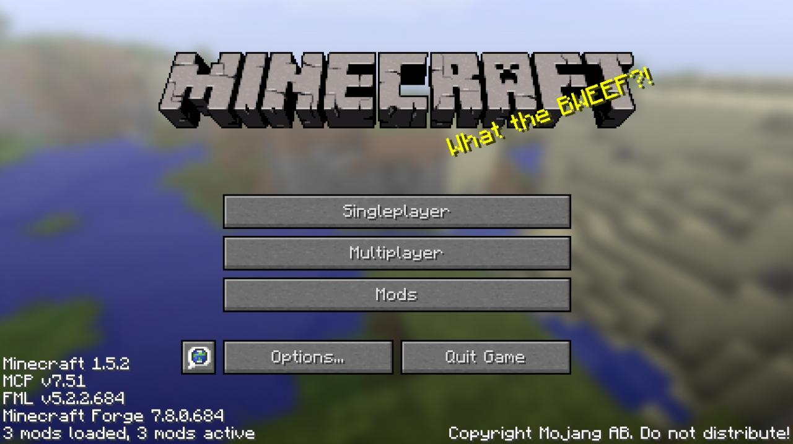
16. Po oswojeniu wilka, jeśli skorzystasz z kodu, możesz zmienić kolor jego obroży na 15 różnych kolorów.
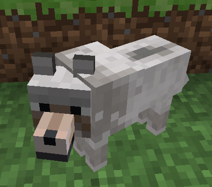
Reklama
17. Picie mleka powstrzyma wszelkie skutki trucizny.
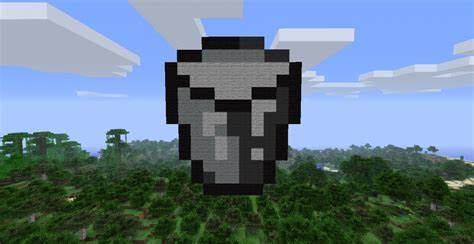
18. Choć może to zabrzmieć tak, jakby mówienie Endermana było niezrozumiałe. Endermana mówi „Cześć” i „Co jest grane?”, ale jest to nagrane od tyłu.
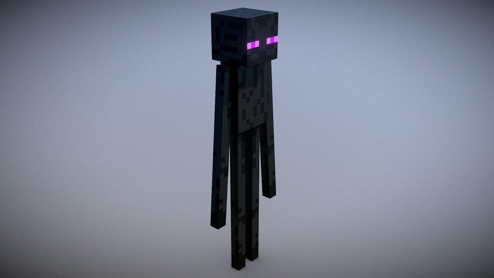
19. Obrazy są jedną z wielu różnych rzeczy, które gracze mogą wykonać i dekorować swój dom. Podczas gdy niektóre obrazy przedstawiają losowe krajobrazy, wiele innych zawiera odniesienia do innych gier wideo. Być może najbardziej rozpoznawalny jest obraz znany jako DonkeyKong, który pokazuje pikselowaną wersję z gry Donkey Kong Arcade.
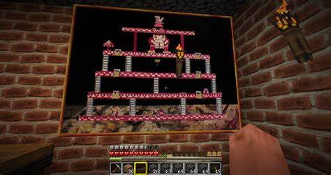
20. Na wczesnym etapie życia Minecraft, wielu użytkowników zaczęło zgłaszać dziwne wydarzenia i obserwacje tajemniczej postaci, która najwyraźniej za nimi podążała. Ta istota która wyglądała jak domyślna postać gracza, tylko z upiornymi białymi oczami – była znana jako Herobrine.
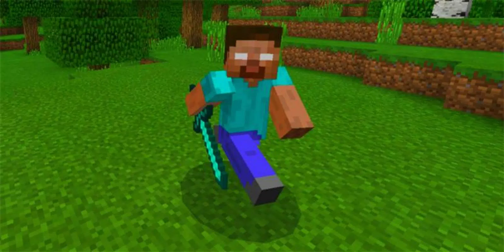
Dopiero zaczynasz z Minecraft?
Jeżeli dopiero zaczynasz swoją przygodę z Minecraftem to myślę że ten poradnik jest właśnie dla ciebie.
Może zacznijmy od sterowania:
W-ruch w przód
S-ruch w tył
A-ruch w lewo
D-ruch w prawo
SPACJA-podskok
2*W-sprint
E-otwieranie ekwipunku
Myślę że ze sterowania to tyle teraz możemy przejść do samej rozgrywki.Minecraft to gra oparta na sztuce przetrwania dlatego musimy dbac o swoje narzędzia.Bez narzędzi w Minecrafcie nic nie zdziałasz. Dbaj o to, aby mieć przy sobie zawsze miecz i kilof. Najlepiej będzie jeśli dane narzędzie będzie najlepszym, jakie możesz aktualnie posiadać, np. złote czy diamentowe.
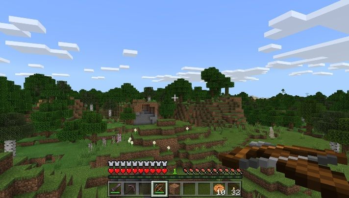
Nie można zapomnieć o rozwoju naszych narzędzi.Jeśli zdobędziesz lepsze surowce skorzystaj z nich. Twórz coraz to nowe zbroje, mocniejsze miecze, silniejsze mury. Po prostu korzystaj z tego co daje Ci gra.
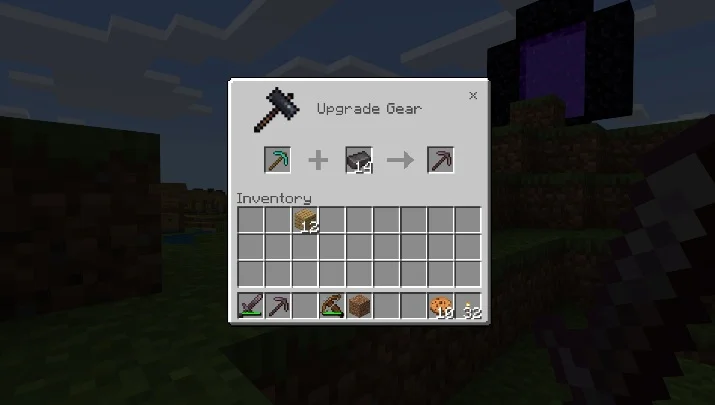
Wspomniałem już o tym że MC to gra oparta na survivalu więc trzeba dbać o to aby mieć co jeść.
Jeśli wybierasz się w jakąś podróż bądź po zapasy do kopalni zawsze miej przy sobie pożywienie. W ten sposób unikniesz nagłej śmierci. Pamiętaj, że zdrowie w Minecrafcie regeneruje się poprzez uzupełnianie poziomu głodu. Jeśli masz pełny poziom głodu Twoja postać zacznie się leczyć.
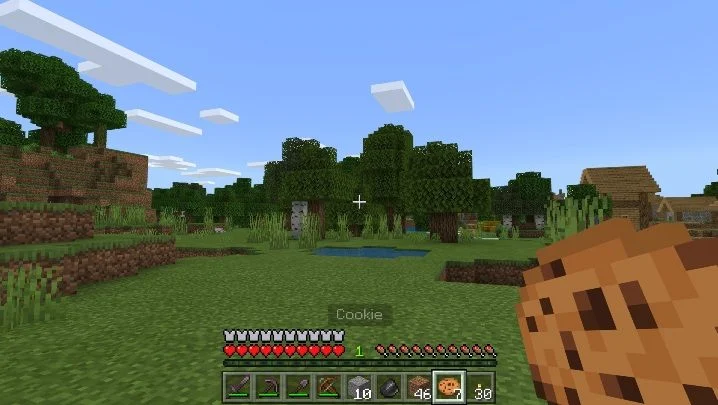
Zawsze bądź czujny.Nigdy nie wiesz co czai się za rogiem. Zawsze bądź przygotowany do walki. Dbaj, więc o swoją zbroję, bronie oraz zapasy, ponieważ nawet w trakcie niewinnej podróży możesz trafić na interesujący obiekt, w którym przyjdzie Ci walczyć.
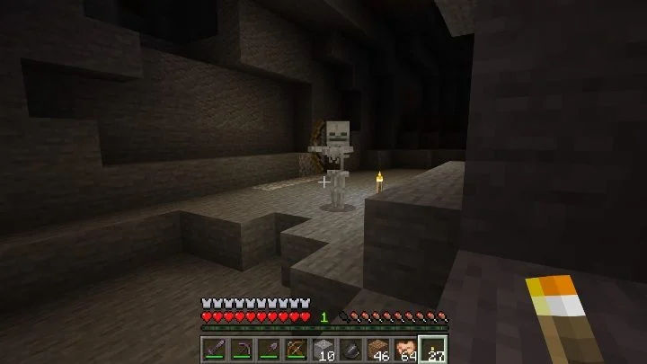
Dbaj o zapas pochodni.Jeśli rozstawisz pochodnie w tunelach masz pewność, że nie pojawią się tam potwory, bowiem światło uniemożliwia im odradzanie się. Dodatkowo pochodniami możesz oznaczać tereny, które Cię interesują bądź po prostu ważne miejsca, do których chcesz wrócić.
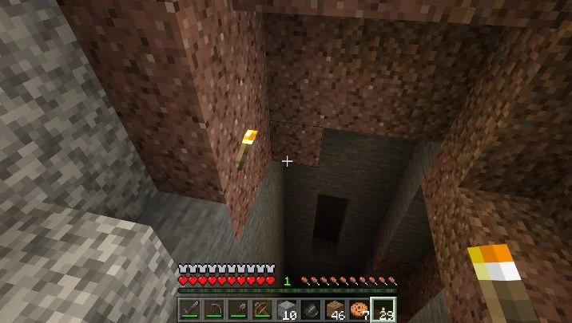